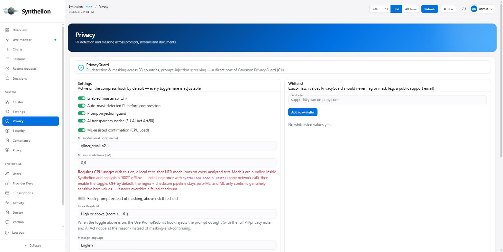
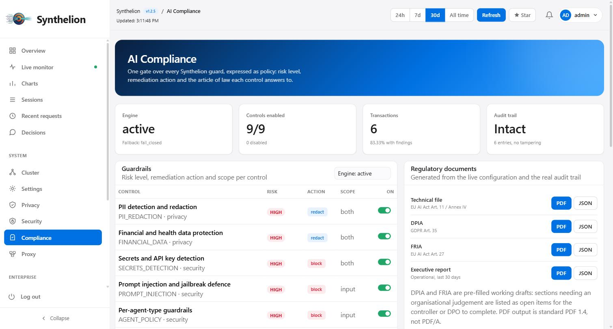
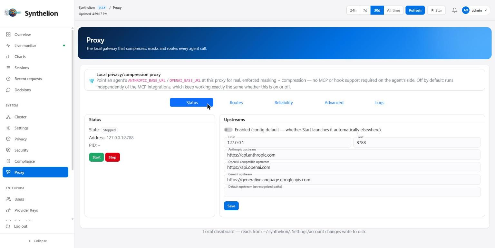
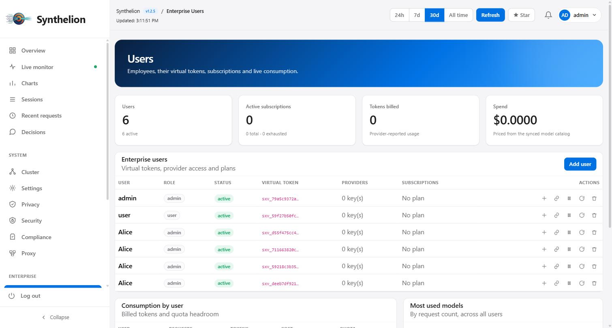
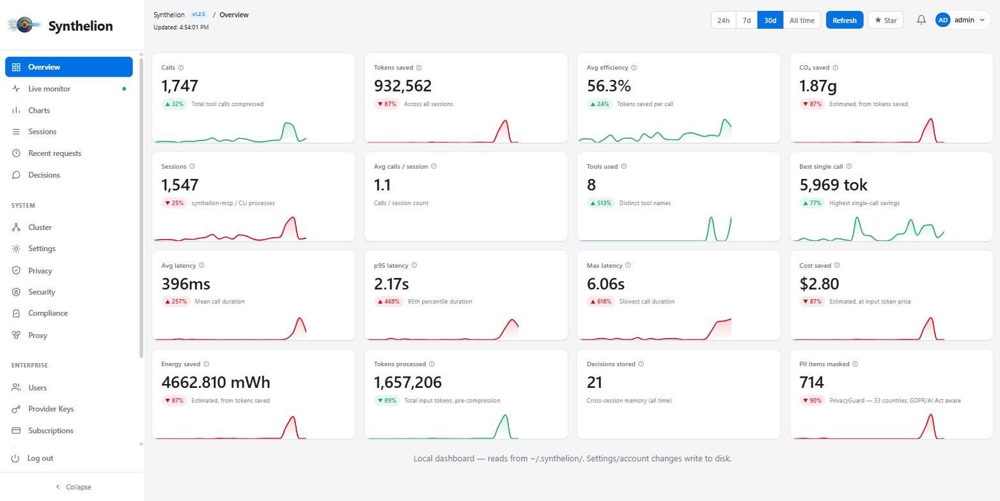
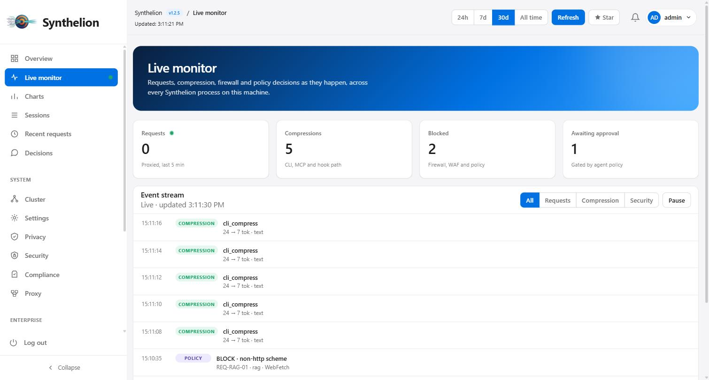
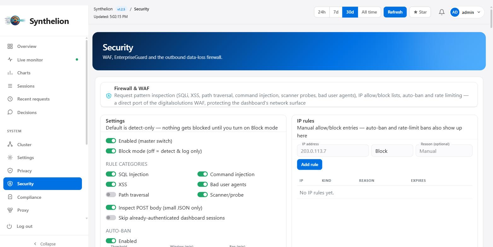
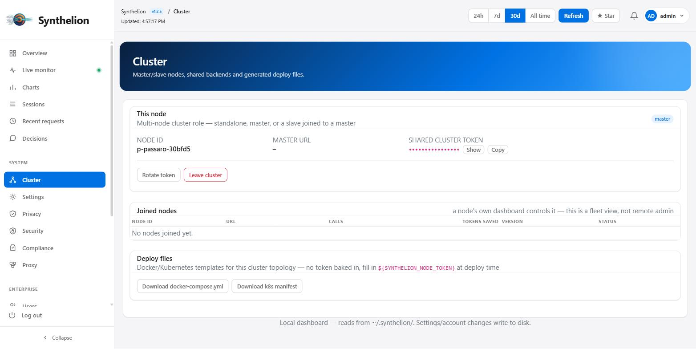

A universal token compressor and security layer for AI agents — MCP-native, 50+ languages, zero ML models required, with an optional fully offline, self-trained ML confirmation tier for privacy detection.
Every token sent to a model costs money and time. Synthelion removes the words that carry no meaning — articles, prepositions, conjunctions, auxiliary verbs — and reduces inflected words to their base form. The model receives the same information, without the grammatical packaging.
The core compression and PrivacyGuard pipelines are deterministic heuristics — curated word lists, BM25, TF-IDF, regex + checksum validators. No network calls, nothing to download to get started.
No per-language configuration. Language is auto-detected, or pass an explicit ISO 639-3 code.
JSON, HTML, git diffs, logs, code and prose each get a dedicated compression strategy, with a universal anti-expansion guard so output is never bigger than input.
Compression escalates for larger inputs, results are cached by content hash, and repeated tool calls are diffed instead of resent in full.
Credential-shaped text (API keys, tokens, PEM blocks) is redacted before it's ever persisted to disk; destructive commands are flagged before compression could obscure them.
46 tools, readOnlyHint-annotated where safe for parallel calls, plus first-class OpenAI/LangChain/CrewAI/Claude adapters and a plain Python API.
Beyond every competitor we looked at, Synthelion is the only library that handles both security and token optimization end-to-end, in one package — built on years of work on the Caveman C# suite.
All levels are additive — an earlier level is never removed or replaced when a new one ships. Negation particles ("non"/"not"/"ne...pas"/"no"/"nicht"/"não"/"不") are always protected at every level, in every language, because dropping a negation doesn't just cost fluency — it inverts meaning.
| Level | What it removes | Typical savings |
|---|---|---|
light | Stop words (articles, prepositions, conjunctions…) | 25–55% |
semantic | Stop words + lemmatization to base form | 30–55% |
aggressive | Everything above + generic verbs and descriptive adjectives | 35–75% |
statistical | TF-IDF word scoring — keeps words above the prompt's own median relevance | 40–65% |
syntactic | Rule-based pruning, keeps grammatical glue only where it touches a surviving word | 45–70% |
synthelionml | Learned per-token keep/drop classifier — falls back to syntactic if the checkpoint isn't installed | ≥65% |
Default level is semantic. Content-aware routing detects JSON, code, SQL, HTML, git diffs and logs automatically, and sends each to a dedicated structure-preserving compressor instead of the word-level filters above — a JSON payload keeps every brace and quote; a prose paragraph gets the full linguistic treatment.
A learned complement to the rule-based compressor: a small transformer encoder (~10M parameters, 2 layers, d=128) trained with self-distillation on Wikipedia corpora across 39 languages. The rule-based AGGRESSIVE compressor provides ground-truth keep/drop labels; the encoder learns to generalise beyond simple rules by attending to surrounding token context.
No GPU required. The checkpoint ships from Hugging Face and downloads once into ~/.synthelion/, never at every run.
If the checkpoint isn't installed, the synthelionml level silently falls back to syntactic rather than failing.
Every prompt is scanned for personally identifiable and sensitive information before it reaches the model — automatically, offline, by default. Detected values are replaced with typed placeholders ([PG_1], [PG_2]...) and restored transparently once the model's response comes back, so the model never sees the real values but your code still gets them.
# Contact me at mario.rossi@example.it, IBAN IT60X0542811101000000123456
# -> Contact me at [PG_2], IBAN [PG_1]
# ... once the response comes back with the placeholders intact:
# -> Contact me at mario.rossi@example.it, IBAN IT60X0542811101000000123456The core tier is regex + algorithmic checksum validation (Luhn for credit cards, ISO 7064 mod-97 for IBAN, and ~30 country-specific national-ID/tax-ID checksums) — deliberately zero-ML, so it never guesses. A bare 11-digit number in prose is never treated as a national ID unless the checksum passes and a context keyword is nearby.

An opt-in ML-assisted confirmation tier for users who need higher recall on genuinely sensitive bare values — a phone number in a log line, an IBAN in a spreadsheet header — that appear without a surrounding context keyword. Synthelion's own model, not a third-party download.
Same self-distillation philosophy as SynthelionML: trained on synthetic PII values generated from Synthelion's own checksum validators and rule patterns, inserted into real multilingual sentences across 39 languages. A failed algorithmic checksum still vetoes detection no matter what the model says — ML only recovers recall the strict context gate intentionally trades away, it never introduces a false positive the validator would reject.
Every PrivacyGuard rule category has an ML confirmation path — phone, email, credit card, IBAN, national/tax IDs, SSN, GPS, vehicle plates, badge IDs, business IDs, credentials, social handles, legal case numbers, booking references, minor-data indicators.
~5M-parameter transformer encoder, CPU-only, downloads once from Hugging Face into ~/.synthelion/.
{
"privacy": {
"use_ml": true,
"ml_model": "privacyguardml",
"ml_min_confidence": 0.6
}
}A hard block-or-allow firewall, distinct from PrivacyGuard (masked-and-continue): for enterprise secrets that have no safe redacted form — cloud/database/FTP/git credentials, private keys, bulk .env dumps — plus user-defined file "security zones" that must never be read into an agent's context at all.
AWS/Azure/GCP credentials, DB connection strings, PEM keys, GitHub/Slack/Bearer tokens, bulk .env dumps — always block, never mask.
Glob patterns an agent must never read, enforced before the read via a PreToolUse-style hook. Sensible defaults already blocked (.env, SSH/PEM keys, kubeconfig, ...).
A fetch/webhook URL targeting a cloud metadata endpoint or a private address is vetoed the same way a blocked file path is.
rm -rf, drop table, git push --force — blocked outright, not just advisory-flagged.
Register a client by IP or MAC with its own extra protected paths — a never-before-seen client is auto-discovered and registered disabled until an admin reviews it.
A cross-process JSONL log records category/rule/source/timestamp — never the triggering text or path itself.
EnterpriseGuard asks "is this forbidden for anyone?" — this asks the narrower question a policy actually cares about: "is this acceptable for this kind of agent?" Seven profiles, each stacked on a baseline applied to every agent: base, dev, support, rag, data, ops, browser.
Next to allow and block: a force push, terraform apply, an IAM grant, a refund over the cap — all legitimate, all needing a human to say yes. A gated call is refused with its reason, never silently allowed.
Some attacks are invisible one call at a time — read something private, then send it outward. The breaker correlates the two within a session and cuts the egress, using an append-only file so it works across processes.
It delegates rather than reimplements: credentials and protected paths go to EnterpriseGuard, SSRF to ssrf_guard, runaway loops to loop_guard, PII to PrivacyGuard, spend caps to the proxy budget tracker.
A governance gate in front of every guard above. It's an aggregation layer — the detection already exists elsewhere; what's new is everything a compliance function needs that no individual guard provides on its own.
19 controls, each with a risk level, a remediation action (block/redact/warn/log-only), an input/output scope and an on/off switch — bound to the guard that implements it.
Each control mapped to the article of law it satisfies, generated from the live configuration — switch a control off and its obligation appears uncovered, rather than continuing to look compliant on paper.
Each entry hashes the one before it; an edited or removed entry breaks every link after it. Stores a SHA-256 fingerprint of each payload, never the prompt or response.
active enforces; staging evaluates and logs every rule but never blocks or rewrites, so a policy can be measured against real traffic before it starts refusing calls; inactive is off.
| Framework | What we cover |
|---|---|
| EU AI Act (Reg. 2024/1689) | Data governance for high-risk systems (Art. 10), human oversight (Art. 14), accuracy/robustness/cybersecurity (Art. 15), transparency to deployers (Art. 13), transparency obligations (Art. 50), marking of generated content (Art. 50(2)), GPAI copyright obligations (Art. 53), prohibited practices (Art. 5), technical file (Annex IV) |
| GDPR (Reg. 2016/679) | Data minimisation (Art. 5(1)(c)), privacy by design/default (Art. 25), special categories of data (Art. 9), transfers outside the EEA (Chapter V), DPIA (Art. 35) |
| NIS 2 / DORA | Technical measures to manage cybersecurity risk (Art. 21) |
| ISO/IEC 42001 | Protection of authentication information (A.8) |
| PCI-DSS | Protection of cardholder data |
| DSA (Reg. 2022/2065) | Systemic-risk mitigation for harmful content (Art. 34) |
PII detection and redaction, financial and health data (PCI-DSS/Art. 9), clinical health data (PHI), cross-border transfer / data-residency control.
Secrets/API-key detection, prompt-injection and jailbreak defence, per-agent-type guardrails, destructive-command detection, credential-shape secondary screen, generated-code vulnerability scanning.
Toxicity and hate-speech filter, hazardous/illegal-activity screening.
AI-interaction disclosure, machine-readable marking of AI-generated content.
Output sanitisation, factuality/hallucination detection, copyright and licence screening, RAG data provenance and source citation.
Administrator-defined regex and keyword rules, merged into the registry at config load time.
| Document | Legal reference | What it contains |
|---|---|---|
| Technical file | AI Act Art. 11 / Annex IV | System description, which controls are active and their status, the versioned system-instruction registry |
| DPIA | GDPR Art. 35 | Data protection impact assessment, a pre-filled working draft with the sections needing organisational judgement left as explicit open items |
| FRIA | AI Act Art. 27 | Fundamental rights impact assessment, same pre-filled-draft approach as the DPIA |
| Executive report | — | Periodic report on controls, blocks and events, generated from the live configuration and audit trail |
The PDF writer has no external dependencies — built from scratch inside Synthelion. It emits valid PDF 1.4 with automatic pagination, tables, bar charts and the Synthelion mark, and transliterates characters outside WinAnsi rather than dropping them. It is not PDF/A: archival conformance additionally needs embedded fonts, an XMP packet and an output intent, and claiming it without those would be false.

Works even where MCP/hooks don't: a local reverse proxy enforces PII masking and compression server-side for any agent that supports a custom API base URL (Cursor, Aider, Codex CLI, Claude Code), with automatic failover across up to 10 backup providers and a circuit breaker — behind the same firewall that protects the dashboard.

Built for giving an entire team access to AI models without ever handing out the real provider API keys. Every employee gets a virtual proxy token, not the provider's key. Real keys (OpenAI, Anthropic, Gemini, Groq, Mistral, DeepSeek, xAI, Together, OpenRouter) stay encrypted with AES-256-GCM server-side, in a database the end user never sees and can never extract from their own machine.
The proxy authenticates the virtual token, maps it to a user, a subscription plan and an assigned provider key, enforces the quota, and only then uses the real key to forward the request — so every company PC running AI goes through the same central control point.
If an employee leaves, or a laptop is lost, disabling that one virtual token is enough — no real key to rotate across every other system.
Metered or monthly subscriptions, with the quota enforced automatically by the proxy based on the assigned plan.
Dashboard view of estimated spend and a ranking of the most-used models per person, computed against the tightest plan they hold.
Generated automatically when the database is created and stored in the OS credential store — never a plaintext file, visible only via a local admin CLI command.

A local, multi-page admin panel — no external calls, no CDN, works offline. Every synthelion-mcp process and every CLI/hook invocation writes to the same lock-free ledger, and the dashboard aggregates them live.
synthelion serve-dashboard # http://127.0.0.1:8787
synthelion dashboard-passwd # change the default admin/admin credentials


For AI-provider-scale deployments — many nodes, thousands of concurrent agent sessions — point every node at a shared session/vector store instead of each running its own. A lightweight master/slave fleet layer sits on top: "Become master" generates a node ID and a shared token; other nodes join with it and appear in the master's node table with live calls/tokens-saved/version. One-click downloads for a pre-wired docker-compose.yml and Kubernetes manifest.

readOnlyHint-annotated where safe for parallel calls — compression, privacy analysis, safety checks, memory, summarization, project wiki, and more.
GPT-4, GPT-4o, Codex, and any OpenAI-compatible API — drop-in compression wrapper.
LangGraph, LCEL, ReAct agents.
Auto-compression for agents and crews.
Auto-compression with one import.
Stateful agent with memory, RAG, and cost tracking built in.
For any custom agent or pipeline.
Shell scripts, pipelines, any language.
# Windows (PowerShell)
irm https://raw.githubusercontent.com/francescopaolopassaro/synthelion/main/install.ps1 | iex
# Linux / macOS
curl -fsSL https://raw.githubusercontent.com/francescopaolopassaro/synthelion/main/install.sh | bash
# All platforms
pip install synthelionworddata (per-language function-word/IDF/POS tables) and the ML checkpoints ship from Hugging Face and download once on first use — the published package stays a few MB, not a few hundred.
50+ languages: Afrikaans, Arabic, Armenian, Basque, Belarusian, Bengali, Bulgarian, Catalan, Chinese, Croatian, Czech, Danish, Dutch, English, Estonian, Finnish, French, Galician, German, Greek, Hebrew, Hindi, Hungarian, Icelandic, Indonesian, Irish, Italian, Japanese, Kannada, Kazakh, Korean, Latin, Latvian, Lithuanian, Macedonian, Malay, Marathi, Norwegian, Persian, Polish, Portuguese, Romanian, Russian, Serbian, Slovak, Slovenian, Spanish, Swedish, Tamil, Telugu, Thai, Turkish, Ukrainian, Urdu, Vietnamese.